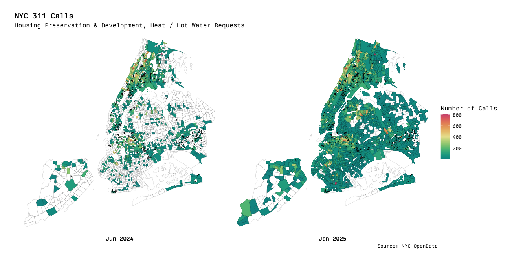

A Project by Michael Romashov
In total, NYC's 311 hotline—which provides information about municipal services and a way to report violations of civil codes—has received just under 13 million requests in 2024 alone in a report published by the service[1]. These requests range from noise complaints, to poor road condition reports, to inadequate heating in municipally subsidized housing.
Data from 311 requests has the potential to provide insight into the general trends across the city, which in turn may help guide funding and resource allocation from the municipal agencies. It may, for example, indicate a general upwards trend in poor road conditions across the city, suggesting that additional funding is needed for the Department of Transportation to maintain public roadways. Or, it may indicate that the number of fraudulent taxi operators is on the rise and suggest the need for stricter regulation of T&LC licences. This is, of course, pure speculation and only meant to illustrate the way 311 requests can provide a sort of overview onto the city's systems in aggregate.
As such, the target audience for this analysis are local municipal representatives and borough-level administration. They have the most immediate impact on funding allocation, and this data is intended to guide those decisions.
Luckily for us, New York City is one of few cities that provides completely free access to several datasets collected by municpal agencies through their NYC OpenData[2] portal, and 311 request data happens to be one of these datesets. With this dataset, I hope to be able to identify these overall trends and speculate upon what could be done in response to them.
PS; Before we get into the data I would like to mention that although we were required to use interactive ggplot visualizations, I find them to be incredibly finicky and detrimental to the overall presentation. For that reason, there are radio buttons for most of the visualizations to switch between a static and interactive display.
The specific dataset we are looking at is titled 311 Service Requests from 2010 to Present[3] and claims to have a behemoth 39.7 million rows. This is far more data than even the website can handle, so we'll limit the time range we are looking at to January 2021–April 2025, which leaves us with a more modest 16.4 million rows.
In direct support of our goal to see general trends of 311 requests throughout the past four years, we can plot the total number of requests made to 311, with each agency getting its own color to show their share of requests.
From this chart we can immediately tell that the amount of 311 requests made each year has stayed at roughly the same level over the past four years, with seemingly no upward nor downward trend. We can also see that very few agencies make up a large portion of the total request volume, namely the NYPD and HPD (Housing Protection and Development Agency). This is indicative of the fact that the two agencies heavily depend on reports by the public to do their work, but not necessarily that they require more or less resources. We will have to look at our data in different ways to determine that.
An interesting feature of this chart, however, is the apparent spike in call traffic in January of 2025. This does not apear to be cyclic, as the other years do not exhibit this spike. It does, however, appear to affect the different agencies in disproportionate ways. The only two agencies to have noticable increases in request traffic are the HPD and NYPD, with the latter of the two exhibiting being less drastic.
This suggests that we should take a look at the HPD's 311 request traffic year-to-year between 2024 and 2025 to identify if there is any room for improvement for the agency.
Now that we're looking specifically at the HPD, we can start to identify more interesting trends. The first thing I took a look at was the kinds of request types that they receive through 311 and their rough distributions. For this, I use a simple horizontal bar chart with the count of each type of request over the course of all four years.
From this chart, it looks like heating and hot water requests account for just over a third of all requests made to the HPD. Without actually looking at the month-by-month comparisons, it would not be surprising if heating requests saw a spike between December 2024 and January 2025, as it was an unusually cold winter by many accounts[4].
We can try mirroring the same setup as the first visualization for the distribution of agencies across all 311 requests, but filtering it to just HPD requests and grouping it by the complaint type instead.
As we predicted, heating and hot water did indeed acocunt for the dramatic spike in 311 traffic in January of 2025. In fact, we can see a cyclic spike during each winter season, though the previous one was slightly more dramatic than the ones from before.
Out of curiosity, we can also take a look at where these requests are coming from geographically, and overlay a heatmap of requests onto a tract map of the city. Each tract is treated as a single unit for administrative and surveying purposes, and they are granular enough that we can see where these requests are coming from.
I've also overlaid all of NYCHA's housing developments onto the map with black dots to see if there is any increase in heating and hot water requests inside of NYCHA's properties. This data was taken from the NYCHA Residential Addresses[5] dataset from NYC OpenData.
Note; This graph was much too large for Plotly to handle, even if I served the file myself and used plotly.js, so I must resort to including a static image only.
So, what have we learned? Well, as it turns out—many New Yorkers are using 311 to report a lack of heating or hot water to the Housing Protection and Development Agency. This may indicate that the HPD needs additional resources and regulatory jurisdiction to be more proactive about adequate heating during the colder winter months.
I looked into how the HPD handles these kinds of requests[6], and they seem to be rather resource intensive. Filing such a complaint will lead the HPD to perform an investigation on the property and subsequently ticket the owner if a violation is found. By being more proactive and ensuring adequate heating, the HPD and adjacent agencies such as NYCHA can reduce the quantity of complaints being made.
Speaking of NYCHA, it appears that there is no strong correlation between NYCHA development projects and an increase in heating complaints during colder winter months. There does, however, appear to be a higher number of complaints made during the warmer summer months. This may point to a lack of adequate insulation, leading to sudden drops in temperatures during night hours.
Another interesting thing that came up during this data analysis was that I actually found erroneous data within the NYCHA dataset. Two of the addresses had their coordinates encoded with a positive longitude, for exmaple (40.821775, 73.942347), which resulted in the visualization showing a mostly empty void. I submitted a report to NYC OpenData to get this resolved.